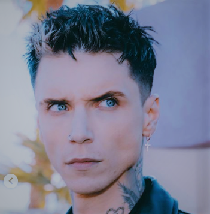
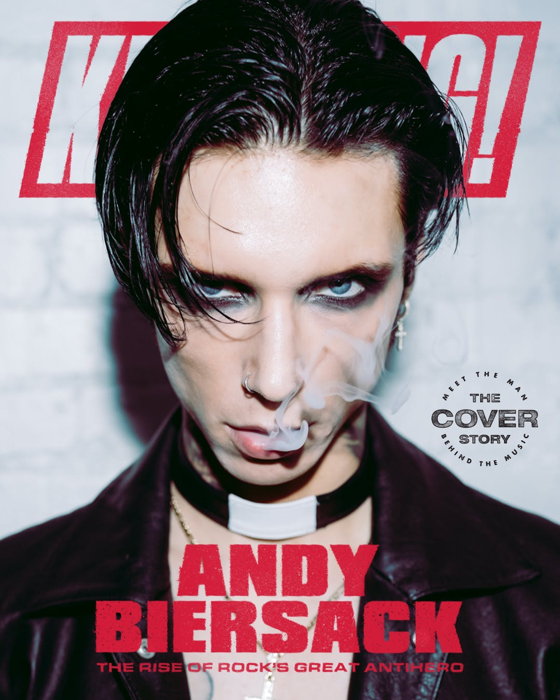
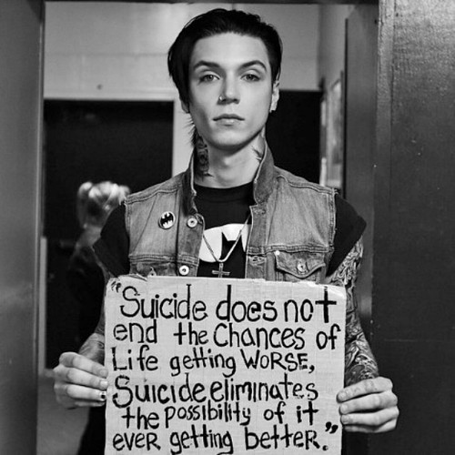
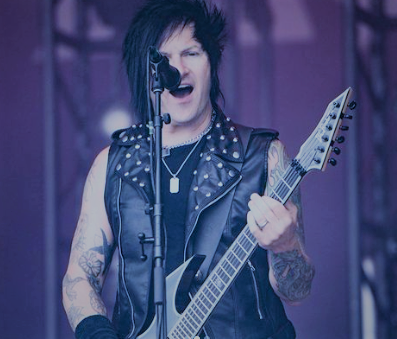
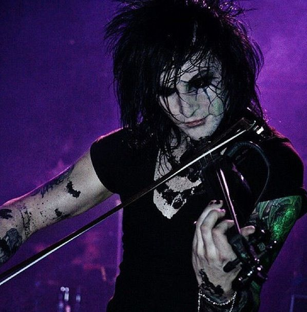
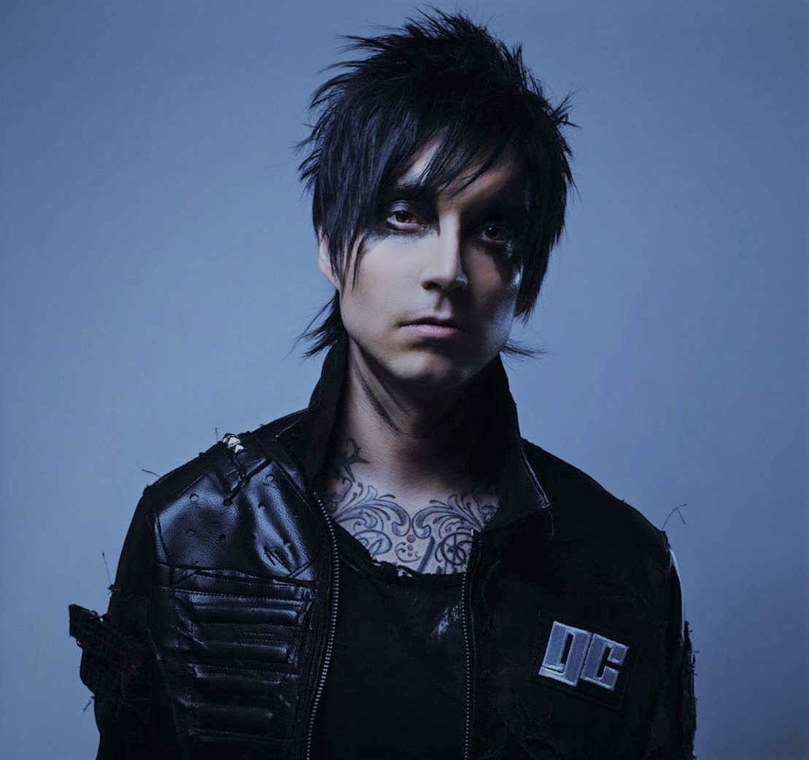
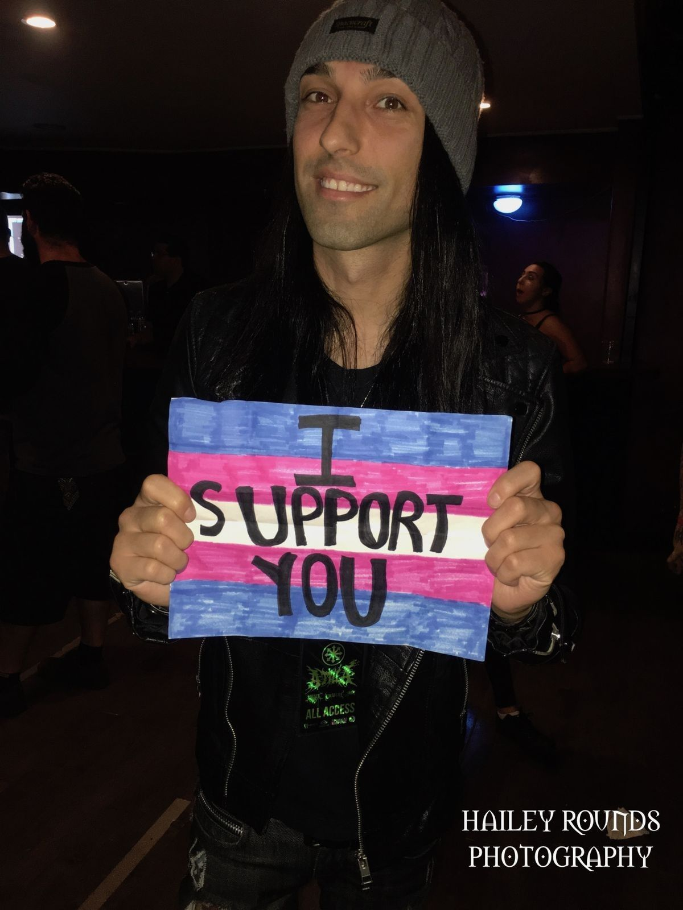

Biografia
Black Veil Brides é uma banda americana de metal, formada em 2006 em Cincinati, Ohio, pelo vocalista Andy Sixx, atualmente com sede em Hollywood, Califórnia. A banda atualmente é composta pelo vocalista Andy Biersack, o guitarrista rítmico e violinista Jinxx, o guitarrista Jake Pitts, o baterista Christian "CC" Coma e o baixista Lonny Eagleton.
A banda formada originalmente como um projeto de post-hardcore de Andy Six (nome artístico de Andy Biersack), tomou proporções maiores graças a uma grande divulgação pela internet promovida por Andy, e em pouco tempo já estava nos 10 artistas de rock mais tocados no Myspace. O seu álbum de estreia, We Stitch These Wounds, foi lançado em 20 de junho de 2010, e alcançou a posição de número #36 na Billboard. O segundo álbum estúdio da banda, Set the World on Fire, foi lançado em 14 de junho de 2011 e apresenta fortes influências do glam metal. É o primeiro álbum com o baterista Christian Coma.
O álbum alcançou a posição de número #17 na Billboard. O terceiro álbum da banda, Wretched and Divine: The Story of the Wild Ones, foi lançado em 8 de janeiro de 2013 e alcançou a posição de número #7 na billboard. Wretched and Divine é um álbum conceitual de ópera rock e spoken word. O quarto álbum da banda chamado Black Veil Brides IV foi lançado em 27 de outubro de 2014 e alcançou a posição de número #10 na Billboard. Quatro anos depois, a banda lança seu quinto álbum, Vale, sendo um sucesso entre o público e a crítica. A banda já lançou quatro EP's, Sex and Hollywood em 2007, Never Give In em 2008, Rebels em 2011 e The Night em 2019, sendo The Night o primeiro com o baixista Lonny Eagleton após a saída de Ashley Purdy.
A banda também lançou um single chamado "Unbroken", que entrou na trilha sonora do filme The Avengers, além de um longa-metragem chamado Legion Of The Black. Em 2015 a banda lança seu primeiro DVD ao vivo intitulado Alive and Burning. Em 2020, para comemorar o aniversário de 10 anos do álbum de estreia We Stitch These Wounds, a banda regravou o álbum sob o selo da Sumerian Records. A regravação foi lançada em 31 de julho de 2020 e foi intitulada Re-Stitch These Wounds.

Formação da banda
Black Veil Brides foi originalmente formado em Cincinnati, Ohio em 2006 por Andy Biersack (que na época usava o nome artístico Andy Sixx), Johnny Herold e Phil Cennedella. Andy Biersack começou com grandes divulgações pela internet e distribuindo algumas de suas gravações demo em sua escola e para conhecidos. Através da California DGK Studios, em 2007 a banda lançou seu primeiro EP com três faixas intitulado Sex and Hollywood.
Em 2008 a banda lançou seu segundo EP intitulado Never Give In, desta vez com quatro faixas. O EP continha o seu futuro single de estreia, "Knives and Pens", canção que trouxe mais reconhecimento a banda. Eventualmente, Andy Biersack se mudou para Los Angeles, Califórnia. No início de 2009, ele iniciou uma nova formação para a banda, a formação era composta por Biersack nos vocais, o guitarrista Chris Hollywood e a baterista Sandra Alvarenga, que logo se juntaram ao baixista Ashley Purdy e ao guitarrista Pan the Gypsy; eles assinaram com o selo independente StandBy Records.
Nome da Banda
Purdy explicou o significado do nome Black Veil Brides.
“Black Veil Brides é um termo católico romano usado para quando uma mulher se casa na igreja e desiste de todos os prazeres da vida para se dedicar a sua vida a Deus. Ela é, então, considerada uma Noiva de Véu Preto. Soa similar a uma banda de rock, onde você tem que desistir de muitas coisas em busca do que você está apaixonado ou acredita. Ele também tem a dicotomia entre o positivo e o negativo. O momento mais feliz na vida de alguém, poder se casar. E o oposto do que na vida de alguém seria em um funeral de um ente querido. Tudo tende a se encaixar muito bem para uma banda de rock escura e pesada."
Gêneros musicais
A sonoridade de Black Veil Brides no seu single de estreia "Knives and Pens" e seu álbum de estreia, We Stitch These Wounds, foi descrita por críticos principalmente como post-hardcore associado à estilos como emo, screamo e metalcore. Com o lançamento de seu segundo álbum de estúdio em 2011, Set the World on Fire, a banda deixou parcialmente a sua sonoridade hardcore de lado e passou a incorporar mais elementos de glam metal, hard rock e heavy metal, possuindo grandes influências de bandas de hair metal da década de 1980, principalmente de bandas provindas de Los Angeles como Mötley Crüe, L.A. Guns e W.A.S.P., tanto na sonoridade quanto em seu visual. Seu terceiro álbum de estúdio Wretched and Divine apresentou fortes influências de ópera rock, sendo um álbum conceitual. Além disso, a banda já incorporou temas góticos em suas letras e álbuns.
Estilo
Como uma banda de shock rock, Black Veil Brides chamou atenção no início de sua carreira em parte por seu visual emo extravagante, roupas de couro justas e maquiagem preta que cobriam o rosto e o corpo de seus integrantes, em parte devido a forte influência de seus ídolos como Kiss, Misfits, Mötley Crüe, Alice Cooper, etc.
Integrantes
Black Veil Brides passou por várias mudanças de membros, (na época do lançamento de "Knives and Pens", o vídeo da música só tinha três membros: Biersack, Sandra Alvarenga e Chris "Hollywood" Bluser), a banda gravou We Stitch These Wounds com Biersack, Jake Pitts, Ashley Purdy, Jinxx e Sandra Alvarenga. Em 2010, quando Sandra deixou o Black Veil Brides para se juntar à banda Modern Day Escape, Christian Coma entrou em seu lugar na bateria. Após a saída de Purdy, a banda chegou à sua formação atual com Lonny Eagleton. Andy Biersack é o único membro fundador remanescente.
Integrantes atuais

Andy Biersack é um cantor, compositor, músico e ator americano. Ele nasceu em 26 de dezembro
de 1990 em Cincinnati, Ohio, nos Estados Unidos.
Biersack começou a tocar música ainda jovem e formou sua primeira banda aos 14 anos. Ele passou a se apresentar em várias bandas locais antes de fundar
o Black Veil Brides.
Ele já atuou em alguns filmes e séries de TV, como "American Satan" em 2017 e "Paradise
City" em 2021.
Além de sua carreira musical, Andy também é conhecido por sua presença na moda, tendo
aparecido em várias revistas e eventos de moda. Ele também é um defensor ativo da prevenção do
suicídio e do apoio à saúde mental, tendo falado abertamente sobre sua própria luta
contra a depressão.
Filmes e séries.
"American Satan" é um filme de drama e suspense lançado em 2017, dirigido por Ash Avildsen e estrelado por Andy Biersack do Black Veil Brides, e Ben Bruce, do Asking Alexandria. O filme conta a história de uma banda de rock em ascensão, chamada The Relentless, formada por um grupo de jovens músicos em busca de fama e sucesso.
A história se passa em Los Angeles, onde a banda se muda para buscar seu sonho de assinar um contrato com uma gravadora. No entanto, eles acabam caindo em tentação e corrupção, envolvendo-se em drogas, sexo e outros excessos típicos do estilo de vida rockstar. O filme também aborda temas como a amizade, lealdade, amor e traição.
O elenco inclui ainda Malcolm McDowell, John Bradley, BooBoo Stewart, Mark Boone Junior, Denise Richards, Bill Goldberg e Drake Bell. A trilha sonora do filme apresenta músicas originais compostas por Jonathan Davis, do Korn, e outros artistas conhecidos.
"American Satan" recebeu críticas mistas dos especialistas, com alguns elogiando a trama e a atuação dos atores principais, enquanto outros criticaram o ritmo lento e os clichês do roteiro. Apesar disso, o filme ganhou uma legião de fãs entre os fãs de rock e heavy metal, e tem sido comparado a outros filmes do gênero, como "Almost Famous" e "Spinal Tap".
"Paradise City" é uma série de televisão dramática de 2020 criada por Ash Avildsen, que também dirigiu o filme "American Satan". A série é um spin-off do filme, e apresenta alguns dos mesmos personagens, bem como alguns novos.
A trama da série segue a história de vários personagens que vivem em Los Angeles, incluindo músicos, fãs de música, empresários e outras pessoas envolvidas na cena musical da cidade. A história se concentra em Johnny Faust, um jovem cantor que busca a fama e o sucesso, e Lily Mayflower, uma modelo e aspirante a atriz que sonha em se tornar uma estrela.
A trilha sonora da série é composta por músicas originais de vários artistas de rock e metal, incluindo Tom Morello, de Rage Against the Machine.
"Paradise City" recebeu críticas mistas, com alguns elogiando a atuação dos atores principais, bem como a trilha sonora e a direção, enquanto outros criticaram a trama previsível e a falta de originalidade. No entanto, a série tem uma base leal de fãs entre os fãs de rock e heavy metal, e muitos estão ansiosos para ver o que a série reserva para o futuro.
Presença de Andy na moda

Biersack é frequentemente visto vestindo jaquetas de couro, botas de cano alto, jeans rasgados, camisetas de bandas, além de maquiagem pesada, incluindo olhos esfumaçados e lábios escuros. Seu estilo reflete sua personalidade rebelde e sua paixão pela música.
Além de ser uma referência para os fãs de rock, Biersack também colaborou com várias marcas de moda, incluindo a empresa americana de roupas e acessórios, "BlackCraft Cult". Em 2018, ele lançou sua própria linha de roupas, "Andy Black".
Biersack também é conhecido por usar suas roupas e maquiagem para expressar sua criatividade e mostrar sua individualidade. Ele incentiva seus fãs a fazerem o mesmo, usando suas redes sociais para compartilhar fotos e dicas de moda.
Em resumo, a presença de Andy Biersack na moda é uma expressão da sua personalidade e estilo musical, que tem inspirado muitos fãs e marcas de moda ao longo dos anos.
Prevenção ao suicídio

Biersack tem usado sua plataforma de música e mídia social para aumentar a conscientização sobre a prevenção do suicídio e incentivar as pessoas a procurarem ajuda se estiverem enfrentando dificuldades emocionais. Ele frequentemente compartilha mensagens positivas e encorajadoras em suas redes sociais, oferecendo palavras de conforto e esperança para aqueles que estão lutando contra a depressão e outras questões de saúde mental.
Além disso, Andy é um apoiador ativo de várias instituições de caridade relacionadas à prevenção do suicídio e da saúde mental. Ele trabalha em estreita colaboração com organizações como a "Hope for the Day" e "To Write Love on Her Arms" para levantar fundos e aumentar a conscientização sobre a importância do cuidado da saúde mental.
Biersack tem falado publicamente sobre sua própria jornada com a saúde mental, incluindo sua batalha contra a depressão e ansiedade. Ele tem sido um exemplo inspirador para muitos fãs que também lutam contra questões de saúde mental e tem encorajado aqueles que precisam de ajuda a procurarem aconselhamento e apoio.

Jinxx, cujo nome real é Jeremy Miles Ferguson, é um guitarrista, violonista, violinista,
compositor e produtor musical americano. Ele nasceu em 7 de janeiro de 1986 em Webster City, Iowa, nos Estados Unidos.
É conhecido por sua presença de palco energética, e por ser gótico e elegante, que inclui
usar roupas de couro, botas e maquiagem dramática.
Antes de entrar para a Black Veil Brides, Jinxx tocou em várias outras bandas, incluindo
The Drastics e The Dreaming. Ele também é um talentoso violinista clássico e já trabalhou
em trilhas sonoras para filmes e programas de TV.
Ao longo de sua carreira, Jinxx tem sido um dos membros mais respeitados e influentes do
Black Veil Brides, contribuindo para o som e a imagem da banda e ajudando a torná-la uma
das mais populares no cenário do rock atual.

Contribuições para filmes e programas de tv.
Algumas de suas contribuições incluem:
- "The Ballad of Hollywood Jack and the Rage Kage", música do filme "Tenacious D in The Pick of Destiny" (2006), em que Jinxx tocou violino.
- "Lucky Day", música do filme "American Satan" (2017), em que Jinxx tocou violino e guitarra.
- "The King of the Shadow Throne", música da série "The Reluctant Landlord" (2018), em que Jinxx tocou violino e guitarra.
Além disso, Jinxx também já apareceu em documentários sobre música, incluindo o filme "American Hardcore" (2006), onde ele falou sobre a cena hardcore punk dos anos 80, e o documentário "Lords of Chaos" (2018), sobre a cena black metal da Noruega.
Direito dos animais
Jinxx é um defensor ativo dos direitos dos animais e usa sua plataforma como artista para promover causas de bem-estar animal. Ele é um grande amante de animais e tem vários animais de estimação em casa, incluindo gatos, cachorros e até uma cobra.
Ele já se associou a várias organizações de caridade que promovem o bem-estar animal, como a ASPCA, a Humane Society e a PETA. Em 2014, ele foi homenageado pela PETA com o prêmio "Hero to Animals" por seu trabalho em defesa dos direitos dos animais.
Jinxx também já participou de campanhas publicitárias para a PETA, como a campanha "Adote, não compre" em que ele incentivou as pessoas a adotar animais de abrigos em vez de comprá-los de lojas de animais. Além disso, ele usa suas redes sociais para conscientizar seus seguidores sobre questões relacionadas ao bem-estar animal, como a importância da adoção de animais de abrigo e a necessidade de cuidar dos animais em nossas comunidades.
Sua paixão pelos animais é uma parte importante de sua vida e de sua identidade como pessoa e artista. Jinxx é um exemplo de como as celebridades podem usar sua plataforma para conscientizar as pessoas sobre causas importantes e inspirar mudanças positivas.

Jake Pitts é um guitarrista americano, mais conhecido por seu trabalho na banda de rock
Black Veil Brides. Ele nasceu em 21 de agosto de 1985 em Boise, Idaho, nos Estados Unidos.
Jake começou a tocar guitarra aos 10 anos de idade e passou a estudar música na Musicians
Institute em Los Angeles. Ele se juntou ao Black Veil Brides em 2009, pouco depois da formação original da banda, e se tornou um membro importante e influente do grupo.
Jake é conhecido por suas habilidades técnicas e sua capacidade de misturar riffs pesados
com solos melódicos. Ele também é um compositor talentoso e já contribuiu para muitas das músicas da banda.
Além de sua carreira musical, Jake é um entusiasta da moda e tem sua própria linha de
roupas chamada "Electric Century".
Jake trabalhou como produtor e engenheiro de gravação em vários projetos musicais. Ele
também tem uma carreira solo, tendo lançado seu primeiro álbum solo, "Electronic Emotions", em 2020.
Contribuições musicais
Além de seu trabalho com o Black Veil Brides, Jake Pitts também trabalhou em projetos paralelos, incluindo a banda Aelonia e o lançamento de um álbum solo em 2020, intitulado "Death Rider". O álbum apresenta Pitts como vocalista e guitarrista principal, explorando uma variedade de gêneros musicais, incluindo metal, rock e pop.
Pitts também é conhecido por suas colaborações com outros músicos, incluindo Asking Alexandria e Falling In Reverse.
Saúde mental
Além de suas contribuições musicais, Jake Pitts é conhecido por ser um defensor da saúde mental e da luta contra o bullying. Ele já compartilhou suas próprias experiências de lidar com a depressão e a ansiedade, e incentiva os fãs a buscarem ajuda se estiverem enfrentando problemas semelhantes.
Em uma entrevista, Jake compartilhou como a música foi uma forma de terapia para ele e como a guitarra o ajudou a superar períodos difíceis em sua vida. Ele também enfatiza a importância da auto-cuidado e da compaixão consigo mesmo, incentivando as pessoas a tirarem um tempo para se cuidarem e se concentrarem em sua saúde mental.
Jake Pitts é um modelo inspirador para seus fãs e para a comunidade musical em geral, usando sua posição de destaque para aumentar a conscientização sobre questões de saúde mental e encorajar os outros a buscar ajuda.
Nasceu em 21 de abril de 1985 em Los Angeles, Califórnia, nos Estados Unidos.
CC Coma entrou para o Black Veil Brides em 2010, depois da saída do baterista original da
banda. Ele rapidamente se tornou um membro importante da banda, conhecido por
seu estilo de tocar bateria energético e técnico, bem como por sua presença de palco carismática.
Além de seu trabalho com o Black Veil Brides, CC Coma também colaborou com vários outros artistas, incluindo William Control e New Years Day. Ele também é conhecido por seu amor por tatuagens, tendo muitas em seu corpo, incluindo a palavra "Brides" tatuada em seus dedos em homenagem à sua banda.

CC Coma é respeitado por sua habilidade na bateria e sua dedicação à música, tendo sido descrito por seus colegas de banda como "um dos melhores bateristas do rock atual". Sua contribuição para o som e a imagem do Black Veil Brides tem sido fundamental para o sucesso da banda e sua posição como uma das principais forças do rock moderno.
Uma curiosidade interessante sobre CC é que ele é um grande fã de basquete e torce pelo time Los Angeles Lakers. Ele é conhecido por usar camisetas do Lakers com frequência, inclusive durante shows da banda Black Veil Brides.
Além disso, CC é conhecido por ser bastante extrovertido e divertido, muitas vezes fazendo brincadeiras e piadas com seus colegas de banda. Ele também é um grande apoiador da comunidade LGBTQ+, tendo postado mensagens de apoio e inclusão em suas redes sociais.
Nasceu em 1 de janeiro de 1992 no Canadá
Lonny já participou de shows com o Black Veil Brides desde que ingressou na banda, mas
ainda não gravou um álbum com eles. A expectativa é que ele traga uma nova energia e dinâmica
para o som do grupo, além de contribuir com suas habilidades como baixista.
Embora ainda seja relativamente novo no Black Veil Brides, Lonny já se tornou um membro
importante da banda e é admirado por seus colegas de banda e fãs por sua dedicação à
música e sua habilidade no baixo.